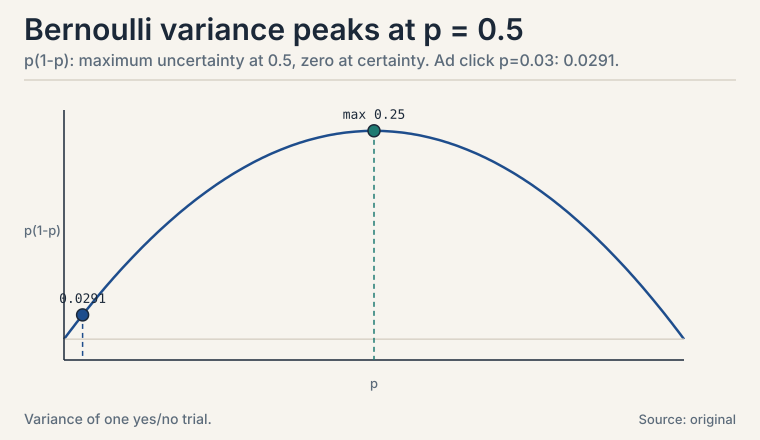
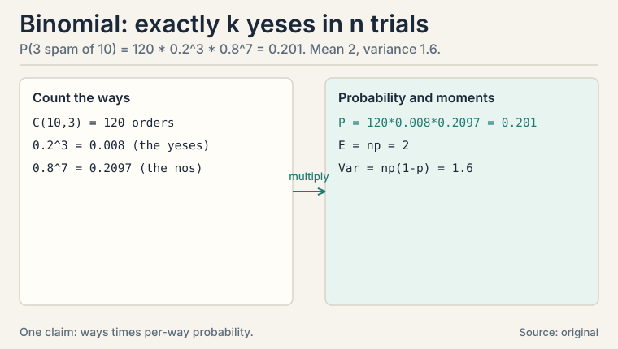
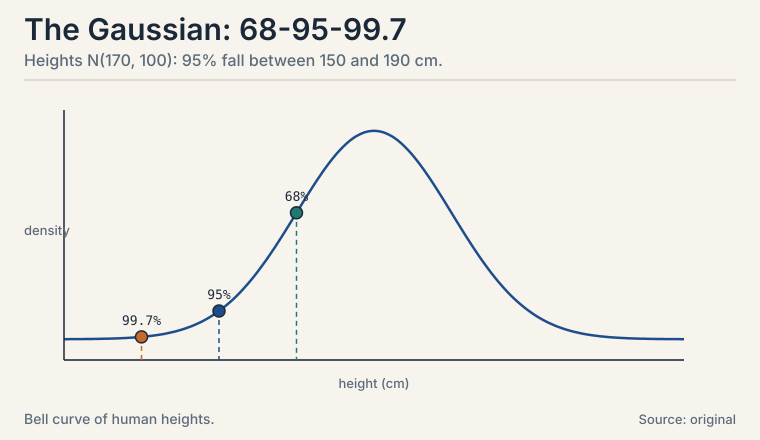
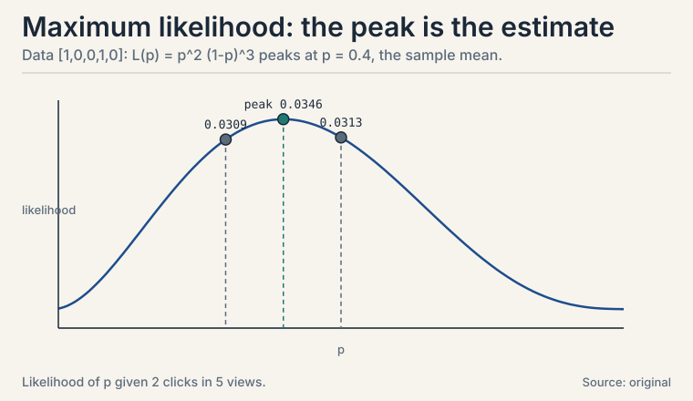
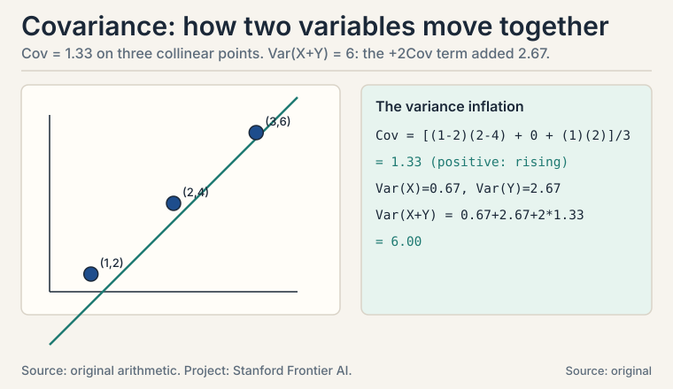
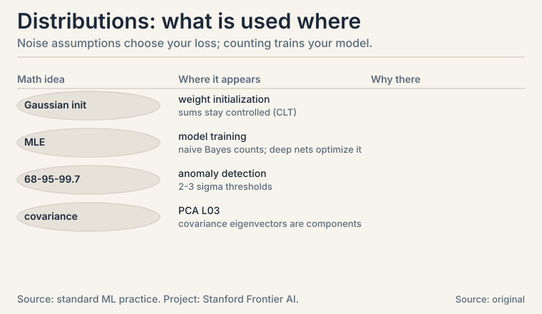

Lecture 6: Distributions and Covariance
Video blocked (ad-blocker or local file mode).
Watch on YouTubeVideo not loading? Watch on YouTube
The NPTEL lecture this chapter follows: discrete distributions, Bernoulli and Binomial.
The task: name the shapes uncertainty takes
L05 gave the rules of probability. Now the vocabulary: the specific distributions that appear in nearly every ML model. A distribution assigns a probability to every possible value of a random variable. Discrete variables get a probability mass function (a list of probabilities that sum to 1). Continuous variables get a probability density function (a curve; areas under it are probabilities).
Three distributions cover most of ML. Each gets a worked example.
Subchapter: Bernoulli, the single yes/no
One trial, two outcomes. A coin flip, a click, spam or not spam.
X ~ Bernoulli(p): P(X=1) = p, P(X=0) = 1-p fair coin: p = 0.5. biased ad click: p = 0.03. E[X] = p. Var(X) = p(1-p).
The variance formula is worth reading: p(1-p) is largest at p = 0.5 (maximum uncertainty) and zero at p = 0 or 1 (certainty). For the ad with p = 0.03: variance = 0.03 * 0.97 = 0.0291. Rare events have small variance because the answer is almost always “no”.
Why does the variance peak exactly at 0.5? Differentiate p(1-p) = p - p^2: derivative 1 - 2p = 0 gives p = 0.5. Symmetry forces it: the yes/no question is hardest when both answers are equally likely.

Subchapter: Binomial, the count of yeses
Repeat n Bernoulli trials. Count the successes.
K ~ Binomial(n, p): P(K=k) = C(n,k) * p^k * (1-p)^(n-k)
10 emails, each spam with p = 0.2. P(exactly 3 spam)?
C(10,3) = 120. P = 120 * 0.2^3 * 0.8^7
= 120 * 0.008 * 0.2097 = 0.201
About a 20% chance of exactly 3 spam emails. E[K] = np = 2, Var(K) = np(1-p) = 1.6. The Binomial is the distribution behind every “k out of n” question: k conversions out of n visitors, k defects out of n parts.
Read the formula in three parts. C(n,k): the number of orders the k yeses can appear in. p^k: the probability of one specific order with k yeses. (1-p)^(n-k): the nos fill the rest. Ways times per-way probability: the same pattern as the plate shows.

Subchapter: Gaussian, the bell curve
The Gaussian or normal distribution is the continuous workhorse: measurement noise, heights, test scores, and the initialization of every neural network weight.
X ~ N(mu, sigma^2): bell centered at mu, width set by sigma
68-95-99.7 rule: P(|X - mu| < sigma) = 0.68
P(|X - mu| < 2 sigma) = 0.95
P(|X - mu| < 3 sigma) = 0.997
Human heights: mu = 170 cm, sigma = 10 cm. About 95% of people fall between 150 and 190 cm. About 0.3% fall outside 140-200 cm. The rule turns “two standard deviations” into a plain-English rarity claim, which is why anomaly detectors threshold at 2 or 3 sigma.
Why is the Gaussian everywhere? The central limit theorem: a sum of many small independent effects looks Gaussian no matter what the pieces look like. Measurement error is the sum of many tiny disturbances, so it is Gaussian. A neural layer sums hundreds of weighted inputs, so its pre-activation is near-Gaussian: this is the deep reason weight initialization samples Gaussians and the sums stay controlled. This is the deep reason the normal distribution models noise across science and ML.

Maximum likelihood: fit the distribution to data
You observe data. Which parameters make the data most probable? That is maximum likelihood estimation, MLE: pick the parameters that maximize P(data | parameters).
Subchapter: Bernoulli MLE is counting
Bernoulli MLE, worked by hand. Five ad impressions, clicks on the 1st and 4th: data = [1, 0, 0, 1, 0]. The likelihood of p is
L(p) = p * (1-p) * (1-p) * p * (1-p) = p^2 (1-p)^3
Try p = 0.4: L = 0.16 * 0.216 = 0.0346. Try p = 0.5: L = 0.25 * 0.125 = 0.0313. Try p = 0.3: L = 0.09 * 0.343 = 0.0309. The winner near 0.4 is no accident: the MLE for Bernoulli is the sample mean, 2/5 = 0.4. Counting is estimating. This one fact underlies naive Bayes training (CS229 L05): estimate each likelihood by counting.

Subchapter: Gaussian MLE is the sample mean and variance
The same idea on the Gaussian: given data points x_1..x_n, the (mu, sigma) maximizing the likelihood are the sample mean and the sample variance. Data [2, 4, 4, 4, 5, 5, 7, 9]: mean = 5, variance = 4. No search needed: closed forms. This is why “fit a Gaussian” in code is two lines: compute the mean, compute the variance. MLE turns distribution-fitting into arithmetic.
The pattern to carry: write the likelihood, maximize it, read off the estimator. Bernoulli gives counting. Gaussian gives mean-and-variance. Each distribution’s MLE is a different summary of the data: always derive it, never guess.
Joint distributions and covariance: when variables move together
A joint distribution P(X, Y) describes two variables at once. From it you can read each variable alone (marginal) or one given the other (conditional). The number that summarizes how two variables move together is the covariance:
Cov(X, Y) = E[(X - E[X])(Y - E[Y])]
Positive: above-average X comes with above-average Y. Negative: they move oppositely. Zero: no linear relationship.
Subchapter: covariance by hand
Three points, by hand: (1, 2), (2, 4), (3, 6). Means: E[X] = 2, E[Y] = 4.
Cov = [(1-2)(2-4) + (2-2)(4-4) + (3-2)(6-4)] / 3
= [( -1)(-2) + 0 + (1)(2)] / 3
= (2 + 0 + 2) / 3 = 1.33
Positive, as expected: the points lie on a rising line. Now the L05 follow-up made concrete: Var(X + Y) = Var(X) + Var(Y) + 2 Cov(X, Y). Here Var(X) = 2/3, Var(Y) = 8/3, so Var(X+Y) = 2/3 + 8/3 + 2*1.33 = 6. The covariance term contributed nearly half. Correlated features inflate the variance of their sum. Portfolio managers and ML regularizers both fight this term.

Subchapter: correlation, the normalized version
Covariance has units: it scales with X and Y. Divide it out:
correlation = Cov(X, Y) / (std(X) * std(Y)) in [-1, 1]
Toy: std(X) = sqrt(2/3) = 0.816, std(Y) = sqrt(8/3) = 1.633, correlation = 1.33 / (0.816 * 1.633) = 1.33 / 1.333 = 1.0. Perfect linear relationship, as the collinear points promise. Correlation is cosine similarity (L01) wearing a statistician’s hat: both divide a raw agreement by the sizes. Use correlation to compare relationships across different units. Use covariance inside formulas like Var(X+Y).
| Distribution | Models | Key numbers |
|---|---|---|
| Bernoulli(p) | one yes/no | mean p, var p(1-p) |
| Binomial(n, p) | count of yeses in n trials | mean np, var np(1-p); toy: P(3 spam of 10) = 0.201 |
| Gaussian(mu, sigma^2) | continuous noise, measurements | 68-95-99.7 rule; toy: 95% of heights in 150-190 cm |
| MLE | fit parameters to data | Bernoulli: sample mean; Gaussian: mean and variance |
| Covariance | joint movement | toy: 1.33 on three collinear points |
| Correlation | normalized covariance | in [-1, 1]; toy: 1.0 |
What is used where: the real systems
| Math idea | Where it appears | Why there |
|---|---|---|
| Gaussian init | Weight initialization | sums of weights stay controlled (CLT) |
| MLE | All model training | naive Bayes counts; deep nets optimize the likelihood |
| 68-95-99.7 | Anomaly detection | 2-3 sigma thresholds |
| Covariance | PCA (L03) | covariance eigenvectors are the components |
| Bernoulli | Binary classification | one yes/no per example |
| Binomial | A/B testing | k conversions out of n visitors |

Two reasons. The central limit theorem: sums of many small independent effects look Gaussian, and measurement error is such a sum. And the math is kind: the Gaussian is fully described by mean and variance, its MLE has a closed form (sample mean, sample variance), and Gaussians stay Gaussian under linear maps. In the toy, heights N(170, 100) give the 95% interval 150-190 cm directly from the 68-95-99.7 rule. Least squares stops being the MLE. Squared error is the MLE only under Gaussian noise; with heavy-tailed noise (outliers), it chases the outliers. That is why robust regression swaps the square for the absolute value. The loss function encodes a noise assumption: always ask which one.
Pick the parameters that make the observed data most probable. Five ad impressions with 2 clicks: the likelihood p^2 (1-p)^3 peaks at p = 0.4, the sample mean. For Bernoulli, MLE is counting. For Gaussian, MLE is the sample mean and sample variance. Training a generative model is usually MLE wearing fancier clothes. No. It is the sample mean for Bernoulli and Gaussian means because their likelihoods peak there. For other distributions it differs: the MLE of a uniform [0, theta] distribution’s endpoint is the maximum observed value, not any mean. Always derive it from the likelihood. Never guess.
Each email is spam with p = 0.2. Step 1: count the orders: C(10,3) = 120 ways to choose which 3 are spam. Step 2: one specific order, say SSSNNNNNNN, has probability 0.2^3 * 0.8^7 = 0.008 * 0.2097. Step 3: multiply: 120 * 0.008 * 0.2097 = 0.201. Ways times per-way probability. Mean np = 2, variance np(1-p) = 1.6. When n is large: the Binomial(n,p) approaches N(np, np(1-p)) by the central limit theorem. Rule of thumb: np and n(1-p) both above 5. That is why large-sample counts get z-tests instead of exact Binomial arithmetic.
It means above-average X travels with above-average Y, linearly. In the toy, three points on a rising line give Cov = 1.33. The practical bite: Var(X+Y) includes +2 Cov(X,Y), so correlated features inflate variance. That inflation is why L01’s dependent features are dangerous and why regularization (CS229 L08) penalizes large weights on correlated inputs. No. Zero covariance means no linear relationship. Y = X^2 with symmetric X has zero covariance but perfect dependence: knowing X determines Y exactly. Independence implies zero covariance. The reverse fails. Interviewers love this trap.
Correlation when comparing across units: it is unitless, in [-1, 1]. Covariance inside formulas: Var(X+Y) needs the raw Cov, not the normalized version. In the toy, Cov = 1.33 but correlation = 1.0: the first feeds the variance formula, the second tells a human “perfect linear relationship.” Exactly 1: Cov(X,X) = Var(X), divided by std(X)*std(X) = Var(X). The correlation matrix has 1s on the diagonal: each variable perfectly tracks itself. Off-diagonals are the interesting part.
The Gaussian’s thin tails make least squares chase outliers: one wild point dominates the squared error. Diagnose with a residual histogram or Q-Q plot: heavy tails show as points far off the line. Fix: switch to a heavy-tailed noise model, which means swapping squared error for absolute error (Laplace noise MLE), or Huber loss as the compromise. The loss encodes the noise assumption: change the assumption, change the loss. It is not differentiable at zero, which complicates gradient methods, and it is less efficient than least squares when the noise really is Gaussian. Huber loss splits the difference: quadratic near zero, linear in the tails. Match the loss to the noise you actually have.
Sums of many small independent effects look Gaussian regardless of the pieces. A neural layer sums hundreds of weighted inputs: its pre-activation is near-Gaussian, which is why weight initialization samples Gaussians and the sums stay controlled. Measurement noise is a sum of tiny disturbances: Gaussian, which is why least squares is the default fit. It bites wherever sums appear: initialization, noise models, and large-sample statistics. Dependence or heavy tails. If the summed effects are strongly correlated, the sum keeps the correlation structure. If individual pieces have infinite variance (Cauchy-like tails), the sum never becomes Gaussian. Check independence and tail weight before invoking it.
Recap: the whole lesson on one screen
- The task. Name the shapes uncertainty takes: mass functions for discrete, densities for continuous.
- Bernoulli. One yes/no: P(X=1) = p. Ad click p = 0.03, variance 0.0291. Variance peaks at p = 0.5.
- Binomial. Count of yeses: P(exactly 3 spam of 10) = 0.201, computed term by term. Ways times per-way probability.
- Gaussian. The bell: 68-95-99.7 rule. 95% of N(170,100) heights fall in 150-190 cm. Central limit theorem explains its ubiquity: sums of small effects.
- MLE. Parameters that maximize P(data | params). Bernoulli toy: p^2(1-p)^3 peaks at the sample mean 0.4. Gaussian MLE: sample mean and variance. Counting is estimating.
- Covariance. E[(X-mean)(Y-mean)]: 1.33 on three collinear points. Correlated features inflate Var(X+Y) through the +2Cov term. Correlation normalizes to [-1, 1]: the toy gives 1.0.
- The price. Every distribution is an assumption. Gaussian MLE gives least squares. Wrong noise model gives wrong loss.
- The bridge. Distributions describe data. Calculus (L07) optimizes over parameters. Together they train models.
Go deeper
- StatQuest, “The Normal Distribution, Clearly Explained” (the embed above): https://www.youtube.com/watch?v=rzFX5NWojp0
- The NPTEL lecture for this lesson (frontmatter video): https://www.youtube.com/watch?v=qDIK0wR41Ic
- Bishop, “Pattern Recognition and Machine Learning”, ch. 1.2, 2: Bernoulli, Binomial, Gaussian, MLE.
- Deisenroth, Faisal, Ong, “Mathematics for Machine Learning”, ch. 6 (free): https://mml-book.github.io: distributions, covariance.
Official sources and further reading
Official: - “Essential Mathematics for Machine Learning” playlist, Lecture 51 (this lesson’s video): paper - NPTEL course page (111107137): https://nptel.ac.in/courses/111107137
Further reading: - Bishop, “Pattern Recognition and Machine Learning”, ch. 1.2, 2: Bernoulli, Binomial, Gaussian, MLE. - Deisenroth, Faisal, Ong, “Mathematics for Machine Learning”, ch. 6 (free): - distributions, covariance.
Caveats. The lecture titles promise discrete, continuous, and joint distributions with covariance. The specific worked examples (spam emails, heights, ad clicks) are the lesson’s own. Exact lecture examples are [uncertain].
Connections to the other courses
- CS229 L05: naive Bayes trains by MLE counting. Gaussian discriminant analysis fits Gaussians per class.
- CS229 L02: least squares is Gaussian MLE. The 68-95-99.7 rule justifies sigma-based anomaly thresholds.
- CS336: weight initialization samples Gaussians. The central limit theorem explains why sums of weights stay controlled.
Sources
- VIDEOEssential Mathematics for Machine Learning: Lecture 51 (Discrete probability distributions)
- SUPPLEMENTBishop, Pattern Recognition and Machine Learning, ch. 1.2, 2
- SUPPLEMENTDeisenroth, Faisal, Ong, Mathematics for Machine Learning, ch. 6